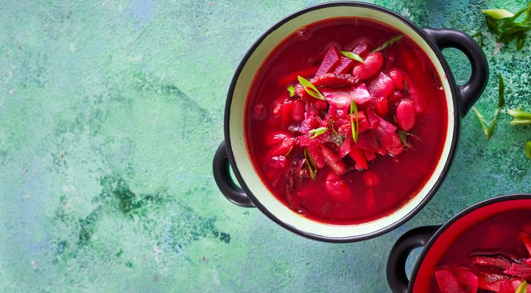

Borscht

This borscht recipe is suitable for vegetarians, yogis, and those who watch their diet. The borscht has a bright and rich flavor and is perfect for a full and energetic life.
- Water - 3 liters
- Canned red beans - 1 can
- Beet - 2 medium
- Potatoes - 3 big
- Carrot - 1
- Cabbage - 1/4 of a big cabbage
- Start boiling water and a tablespoon of salt
- Cut the vegetables and add them in the following order: potatoes, cabbage, carrot, beet
- In the end add the canned red beans and some spices to taste. Turn off the heat and wait for 30 minutes. Borscht is ready.
- Serve with sourcream, parsley and dill